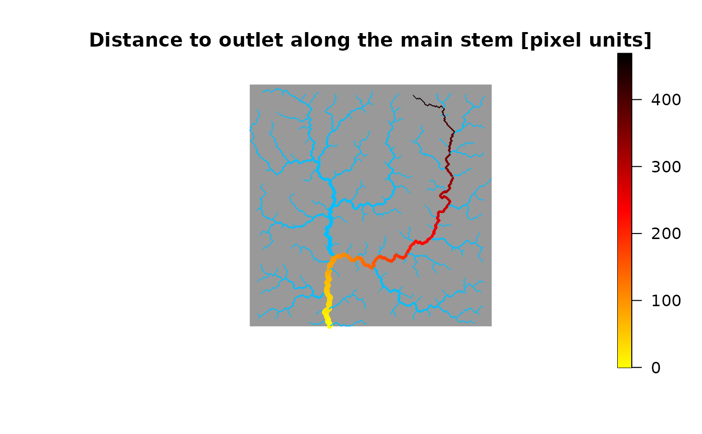
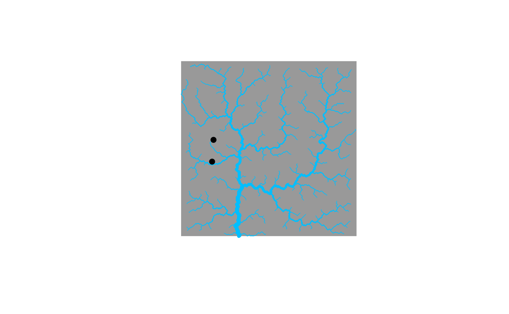

Calculate paths between nodes in an Optimal Channel Network
paths_OCN.RdFunction that determines upstream and downstream paths and path lengths between any nodes of the network at the aggregated level.
Usage
paths_OCN(OCN, level = c("RN","AG"), whichNodes = NULL, includePaths = FALSE,
includeDownstreamNode = FALSE, includeUnconnectedPaths = FALSE, displayUpdates = FALSE)Arguments
- OCN
A
riverobject as produced byaggregate_OCN.- level
Character vector. At which level should paths be calculated? Possible values are
"RN","AG", or both.- whichNodes
List. It allows specifying a subset of nodes for which paths are computed. In the case of large rivers, this could speed up the function execution substantially. It must contain objects named
RNand/orAG. Each of these objects is a vector with the indices of the nodes for which paths are to be calculated. Default isNULL, which leads to calculation of paths between all nodes at the level(s) specified inlevel. IfwhichNodescontains a single object (RNorAG), this is taken as the level at which paths are calculated (i.e.,levelis overwritten). If not present, the outlet node is automatically added. See example.- includePaths
Logical. If
TRUE,RN$downstreamPathandAG$downstreamPathare included to the output object. Note that this might slow down the function execution considerably, and create RAM issues for very large OCNs.- includeDownstreamNode
Logical. If
TRUE, path lengths include the length of the edge departing from the last downstream node of the path.- includeUnconnectedPaths
Logical. If
TRUE, calculate path lengths between unconnected nodes (RN$downstreamLengthUnconnectedandAG$downstreamLengthUnconnected). Note that this might slow down the function execution considerably, and create RAM issues for very large OCNs.- displayUpdates
Logical. State if updates are printed on the console while
paths_OCNruns.
Value
A river object that contains all objects contained in OCN, in addition to the objects listed below.
RN$downstreamPathList (of length
OCN$RN$nNodes) whose objectiis a list (of lengthOCN$RN$nNodes). If nodesiandjare connected by a downstream path, thenRN$downstreamPath[[i]][[j]]is a vector containing the indices of the nodes constituting such path (iandjare included). Ifiandjare not connected by a downstream path, thenRN$downstreamPath[[i]][[j]] = NULL. Only present ifincludePaths = TRUE.RN$downstreamPathLengthSparse matrix (
OCN$RN$nNodesbyOCN$RN$nNodes) containing length of paths between nodes that are connected by a downstream path; ifiandjare not connected by a downstream path, thenRN$downstreamPathLength[i,j] = 0. Note thatRN$downstreamPathLength[i,i] = 0ifincludeDownstreamNode = FALSE; alternatively, it isRN$downstreamPathLength[i,i] = OCN$RN$leng[i]. It is aspamobject.RN$downstreamLengthUnconnectedMatrix (
OCN$RN$nNodesbyOCN$RN$nNodes).RN$downstreamLengthUnconnected[i,j]is the length of the downstream portion of a path joining nodeitojifiandjare not connected by a downstream path. Specifically,RN$downstreamLengthUnconnected[i,j] = RN$downstreamPathLength[i,k], wherekis a node such that there exist a downstream path fromitokand fromjtok, and these paths are the shortest possible. Note that the length of the upstream portion of the path joiningitojis given byRN$downstreamLengthUnconnected[j,i]. If insteadiandjare joined by a downstream path, thenRN$downstreamLengthUnconnected[i,j] = 0. Only present ifincludeUnconnectedPaths = TRUE.AG$downstreamPathList (of length
OCN$AG$nNodes) whose objectiis a list (of lengthOCN$AG$nNodes). If nodesiandjare connected by a downstream path, thenAG$downstreamPath[[i]][[j]]is a vector containing the indices of the nodes constituting such path (iandjare included). Ifiandjare not connected by a downstream path, thenAG$downstreamPath[[i]][[j]] = NULL. Only present ifincludePaths = TRUE.AG$downstreamPathLengthSparse matrix (
OCN$AG$nNodesbyOCN$AG$nNodes) containing length of paths between nodes that are connected by a downstream path; ifiandjare not connected by a downstream path, thenAG$downstreamPathLength[i,j] = 0. Note thatAG$downstreamPathLength[i,i] = 0ifincludeDownstreamNode = FALSE; alternatively, it isAG$downstreamPathLength[i,i] = OCN$AG$leng[i]. It is aspamobject.AG$downstreamLengthUnconnectedMatrix (
OCN$AG$nNodesbyOCN$AG$nNodes).AG$downstreamLengthUnconnected[i,j]is the length of the downstream portion of a path joining nodeitojifiandjare not connected by a downstream path. Specifically,AG$downstreamLengthUnconnected[i,j] = AG$downstreamPathLength[i,k], wherekis a node such that there exist a downstream path fromitokand fromjtok, and these paths are the shortest possible. Note that the length of the upstream portion of the path joiningitojis given byAG$downstreamLengthUnconnected[j,i]. If insteadiandjare joined by a downstream path, thenAG$downstreamLengthUnconnected[i,j] = 0. Only present ifincludeUnconnectedPaths = TRUE.
Examples
# 1) Calculate paths between nodes of an OCN
OCN <- paths_OCN(aggregate_OCN(landscape_OCN(OCN_20), thrA = 4))
# \donttest{
# 2) Display distance to outlet (at the RN level) along the main stem
# of an OCN
OCN <- aggregate_OCN(landscape_OCN(OCN_250_T)) # this takes some seconds
OCN <- paths_OCN(OCN, includePaths = TRUE) # this takes some seconds
distanceToOutlet <- OCN$RN$downstreamPathLength[,OCN$RN$outlet]
farthestNode <- which(distanceToOutlet == max(distanceToOutlet))
mainStem <- OCN$RN$downstreamPath[[farthestNode]][[OCN$RN$outlet]]
theme <- rep(NaN, OCN$RN$nNodes)
theme[mainStem] <- distanceToOutlet[mainStem]
draw_thematic_OCN(theme, OCN)
title("Distance to outlet along the main stem [pixel units]")

# 3) use whichNodes to compute distance between two non flow-connected nodes
OCN <- aggregate_OCN(landscape_OCN(OCN_250_T)) # this takes some seconds
RNnodes <- c(483, 516)
plot(OCN)
points(OCN$RN$X[RNnodes], OCN$RN$Y[RNnodes], pch = 19) # nodes 483 and 516 are not flow-connected

OCN <- paths_OCN(OCN, whichNodes = list(RN=RNnodes), includePaths = TRUE,
includeUnconnectedPaths = TRUE)
OCN$RN$downstreamPath[[RNnodes[1]]][[OCN$RN$outlet]]
#> [1] 483 500 514 513 524 534 542 550 561 575 587 598 611 623 636
#> [16] 651 662 674 689 712 734 758 779 780 796 811 822 831 840 852
#> [31] 867 881 890 898 907 918 930 954 984 1015 1051 1082 1105 1081 1104
#> [46] 1103 1102 1101 1100 1080 1079 1050 1014 983 953 952 982 981 980 951
#> [61] 929 950 979 1013 1049 1078 1077 1048 1076 1047 1075 1074 1046 1073 1045
#> [76] 1012 1011 1044 1072 1071 1070 1098 1123 1149 1171 1170 1148 1169 1147 1122
#> [91] 1121 1097 1068 1042 1067 1041 1040 1039 1038 1037 1009 976 1008 975 1007
#> [106] 974 1006 1036 1035 1005 973 946 972 971 1004 970 969 945 944 968
#> [121] 943 942 967 966 1003 1034 1065 1064 1033 1032 1031 1030 1029 1002 1001
#> [136] 1028 1027 1026 1025 1000 965 941 925 914 913 924 940 939 938 964
#> [151] 963 999 998 962 997 1024 1062 1061 1023
# the outlet node has been added to whichNodes$RN
OCN$RN$downstreamLengthUnconnected[RNnodes[1], RNnodes[2]]
#> [1] 30.04163
# distance from node 1 to the common downstream confluence
OCN$RN$downstreamLengthUnconnected[RNnodes[2], RNnodes[1]]
#> [1] 44.35534
# distance from node 2 to the common downstream confluence
# }